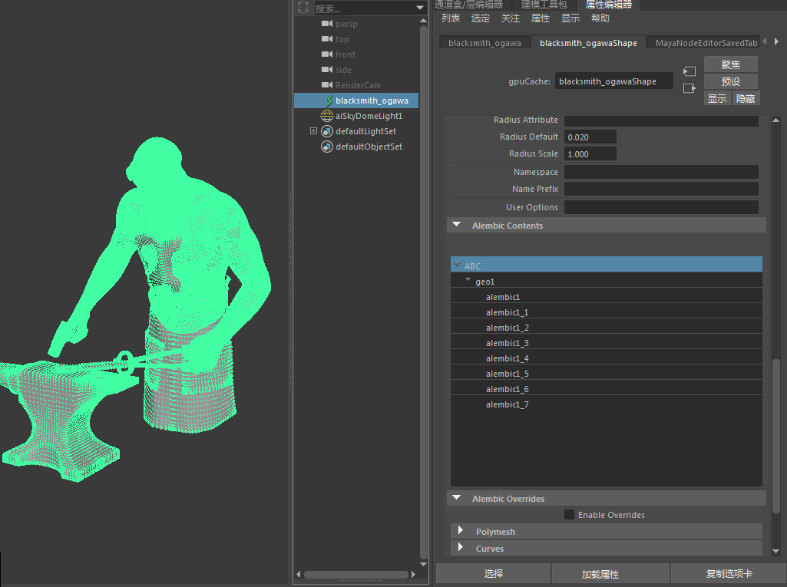
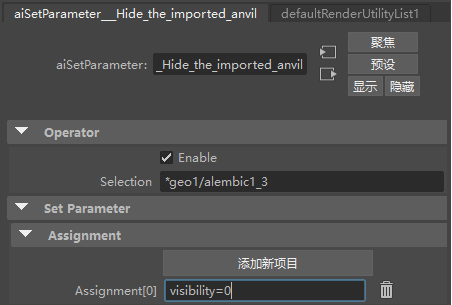
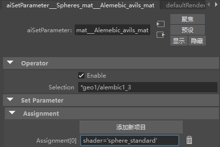
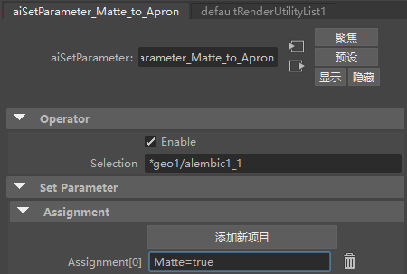
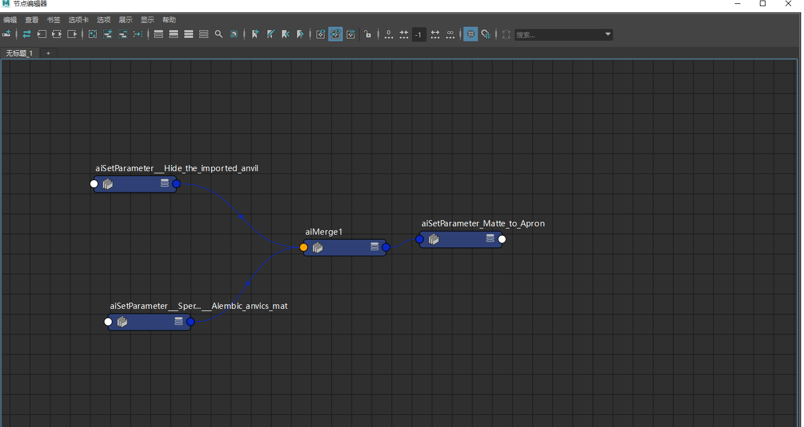

使用运算符修改 Alembic 程序
 |
使用运算符在 Alembic 程序内更改铁砧的颜色、将蒙版添加到挡板并隐藏铁砧。
本教程介绍如何应用运算符以修改“不透明”对象的内容，这是一个 Arnold Alembic 程序。Alembic 文件本身并不包含材质，没有特定的对象特性，这里正是运算符的用武之地，例如，将给定着色器应用于给定子对象。对于导入的 *Alembic，每个子对象是一个实际的形状节点。通过运算符，我们可以对 *Alembic 文件的各个内容执行操作。
像在文件系统中一样，Arnold 中也存在一种根深蒂固的命名约定。根级别为 /，层级中的每个节点也使用 / 与其父节点进行分隔。因此，如果将此场景导出到 .ass 文件，对于导入的 Alembic 形状，您将读取名称 /geo1/alembic1, /geo1/alembic1_1，依此类推。而对于 Arnold Alembic 节点，只有一个 /Alembic001 节点名称。此约定非常重要，因为运算符选择在很大程度上基于 Arnold 对象名称。
使用“诊断 > 功能覆盖”(Diagnostics > Feature Overrides)中的“忽略运算符”(Ignore Operators)标志，以检查在没有任何运算符时渲染效果如何。
要下载对应的场景文件，请单击此处。

Alembic 几何体在 Arnold 属性中可见
隐藏铁砧（“设置参数”(Set Parameter)）
我们可以使用“设置参数”(Set Parameter)隐藏所导入 Alembic 的铁砧。
- 添加以下表达式：
visibility=0
- 在“选择”(Selection)下为铁砧几何体添加以下内容：
*geo1/alembic1_3

在“选择”(Selection)中，将需要以“*”或程序名称开头
将蓝色着色器指定给铁砧（“设置参数”(Set Parameter)）
我们可以使用以下内容在 Alembic 中将球体蓝色 standard_surface 着色器指定给铁砧（请注意，着色器名称也具有尾部反斜杠）：
- 在“选择”(Selection)下为铁砧几何体添加以下内容：
*geo1/alembic1_3
- 在“表达式”(Expression)下添加以下内容：
shader='sphere_standard'

合并(Merge)
我们可以使用“合并”(Merge)运算符将两个输入节点组合在一起。
将蒙版指定给挡板（“设置参数”(Set Parameter)）
我们可以使用“设置参数”(Set Parameter)运算符将 Arnold Alembic 挡板变成蒙版对象。
- 在“表达式”(Expression)下添加以下内容：
matte=true
- 在“选择”(Selection)下为挡板几何体添加以下内容：
*geo1/alembic1_1


最终运算符图表设置